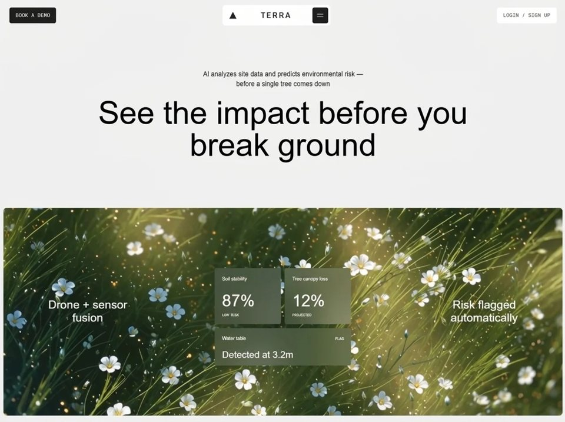

TerraVision
Naturenatureyilai-ai 公开页面
收录时间：2026-08-20正文：21,615 字符

本地预览图 · jpeg
完整提示词
Build a single-page React + TypeScript + Vite + Tailwind CSS landing page for a construction-insurance brand called **BuildShield**. It is a **two-section full-screen scroll-hijacked experience**: a gold Hero and a white Features section that cross-fade into each other on wheel/touch scroll. Follow every specification below **exactly** — colors, pixel values, animation delays, class names, and URLs are all literal and must not be substituted or "improved."
---
## 1. Stack & Tooling
- **Vite 5** + `@vitejs/plugin-react`, React **18.3**, TypeScript **5.5**
- **Tailwind CSS 3.4** + `postcss` + `autoprefixer`
- **lucide-react ^0.446.0** (only `Menu` and `X` icons are used)
- `package.json` has `"type": "module"`, scripts: `dev`, `build`, `lint`, `preview`, `typecheck` (`tsc --noEmit -p tsconfig.app.json`)
**`vite.config.ts`** — must define the `@` alias and exclude lucide from prebundling:
```ts
import { defineConfig } from 'vite';
import react from '@vitejs/plugin-react';
import { fileURLToPath, URL } from 'node:url';
export default defineConfig({
plugins: [react()],
resolve: {
alias: { '@': fileURLToPath(new URL('./src', import.meta.url)) },
},
optimizeDeps: { exclude: ['lucide-react'] },
});
```
Add the matching `"baseUrl": "."` / `"paths": { "@/*": ["./src/*"] }` to `tsconfig.app.json` so the `@/components/...` imports typecheck.
---
## 2. `index.html`
Exactly this — including both font `<link>` tags and the title:
```html
<!doctype html>
<html lang="en">
<head>
<meta charset="UTF-8" />
<link rel="icon" type="image/svg+xml" href="/vite.svg" />
<meta name="viewport" content="width=device-width, initial-scale=1.0" />
<title>BuildShield - Eliminating the Friction of Risk</title>
<link href="https://db.onlinewebfonts.com/c/08ae108e7fb1d31fd1311943f98055fe?family=TT+Octosquares+Trl+Cnd" rel="stylesheet">
<link href="https://fonts.googleapis.com/css2?family=Inter+Tight:wght@400;500;600;700&display=swap" rel="stylesheet">
<meta property="og:image" content="https://bolt.new/static/og_default.png">
<meta name="twitter:card" content="summary_large_image">
<meta name="twitter:image" content="https://bolt.new/static/og_default.png">
</head>
<body>
<div id="root"></div>
<script type="module" src="/src/main.tsx"></script>
</body>
</html>
```
### Fonts (critical)
- **Display font:** `"TT Octosquares Trl Cnd"` — a condensed geometric square-ish display face, loaded from the OnlineWebFonts CDN URL above. Used for the logo wordmark, H1, H2, and card titles.
- **Body font:** `"Inter Tight"` from Google Fonts, weights **400, 500, 600, 700**. Used for everything else.
---
## 3. `tailwind.config.js`
```js
/** @type {import('tailwindcss').Config} */
export default {
content: ['./index.html', './src/**/*.{js,ts,jsx,tsx}'],
theme: {
extend: {
fontFamily: {
octosquares: ['"TT Octosquares Trl Cnd"', 'sans-serif'],
inter: ['"Inter Tight"', 'sans-serif'],
},
colors: {
gold: {
DEFAULT: '#F3AF42',
dark: '#C68C2F',
},
dark: '#080808',
},
},
},
plugins: [],
};
```
**Color tokens used throughout:**
| Token | Hex | Where |
|---|---|---|
| `bg-gold` | `#F3AF42` | Hero background, mobile menu overlay |
| `border-gold-dark` | `#C68C2F` | Hero solid + dashed frames, column divider |
| `bg-dark` / `text-dark` | `#080808` | Buttons, corner dots, logo fill, `<body>` bg |
| `text-gold` | `#F3AF42` | Hero button label text |
| `neutral-200` | Tailwind default | Features frames + dashed borders |
| Card surface | `#F7F7F7` | Inline `style={{ backgroundColor: '#F7F7F7' }}` |
| Card logo fill | `#f59e0b` | The small amber `CardLogo` SVG |
---
## 4. `src/index.css` — exact contents
```css
@tailwind base;
@tailwind components;
@tailwind utilities;
@layer base {
html {
scroll-behavior: smooth;
-webkit-font-smoothing: antialiased;
-moz-osx-font-smoothing: grayscale;
}
html::-webkit-scrollbar {
display: none;
}
html {
-ms-overflow-style: none;
scrollbar-width: none;
}
body {
font-family: 'Inter Tight', sans-serif;
background-color: #080808;
}
}
@layer utilities {
@keyframes fade-up {
from {
opacity: 0;
transform: translateY(18px);
}
to {
opacity: 1;
transform: translateY(0);
}
}
@keyframes fade-in {
from { opacity: 0; }
to { opacity: 1; }
}
@keyframes scale-in {
from {
opacity: 0;
transform: scale(0.96);
}
to {
opacity: 1;
transform: scale(1);
}
}
@keyframes border-draw {
from {
opacity: 0;
clip-path: inset(0 100% 100% 0);
}
to {
opacity: 1;
clip-path: inset(0 0 0 0);
}
}
.scrollbar-hide {
-ms-overflow-style: none;
scrollbar-width: none;
}
.scrollbar-hide::-webkit-scrollbar {
display: none;
}
.animate-fade-up {
animation: fade-up 0.7s cubic-bezier(0.16, 1, 0.3, 1) both;
}
.animate-fade-in {
animation: fade-in 0.6s ease both;
}
.animate-scale-in {
animation: scale-in 0.8s cubic-bezier(0.16, 1, 0.3, 1) both;
}
.animate-border-draw {
animation: border-draw 0.9s cubic-bezier(0.16, 1, 0.3, 1) both;
}
}
```
**Animation summary** — the whole page uses exactly four keyframes and one easing curve, `cubic-bezier(0.16, 1, 0.3, 1)` (a fast-out, long-settle "expo out"):
- `fade-up` — 0.7s, translateY **18px → 0** + fade. Fill mode `both`.
- `fade-in` — 0.6s, `ease`, pure opacity.
- `scale-in` — 0.8s, scale **0.96 → 1** + fade.
- `border-draw` — 0.9s, `clip-path: inset(0 100% 100% 0) → inset(0 0 0 0)`, which wipes the frame in diagonally from the top-left. This is the signature effect.
Every animated element gets its timing via an inline `style={{ animationDelay: 'Nms' }}`.
---
## 5. `src/main.tsx`
```tsx
import { StrictMode } from 'react';
import { createRoot } from 'react-dom/client';
import App from './App.tsx';
import './index.css';
createRoot(document.getElementById('root')!).render(
<StrictMode>
<App />
</StrictMode>
);
```
---
## 6. `src/App.tsx` — the scroll orchestrator
A fixed, non-scrolling `<main className="relative h-screen w-full overflow-hidden">` holding two absolutely-positioned, stacked layers that cross-fade.
**State:** `activeSection` (`0` = Hero, `1` = Features), `transitioning` (boolean lock), and `featuresRef` (a `useRef<HTMLDivElement>` on the Features layer).
**Wheel handler** (`useCallback`, deps `[activeSection, transitioning]`):
- Bail immediately if `transitioning`.
- `deltaY > 0` while on section 0 → lock, go to section 1, unlock after **1000ms** via `setTimeout`.
- `deltaY < 0` while on section 1 → **only** go back to section 0 if `featuresRef.current.scrollTop <= 0` (so the user must scroll Features to the very top before the hero returns). Same 1000ms lock.
**Touch handlers** (inside the `useEffect`): record `touchStartY` on `touchstart`, and on `touchend` compute `deltaY = touchStartY - e.changedTouches[0].clientY`. Threshold is **50px**: `deltaY > 50` advances to Features, `deltaY < -50` returns to Hero (again gated on `scrollTop <= 0`).
All three listeners (`wheel`, `touchstart`, `touchend`) are attached to `window` with `{ passive: true }` and removed on cleanup. Effect deps: `[handleScroll, activeSection, transitioning]`.
**Layer 1 — Hero:**
```
className="absolute inset-0 transition-all duration-700 ease-[cubic-bezier(0.16,1,0.3,1)]"
style: opacity 1→0, transform scale(1)→scale(0.97), pointerEvents 'auto'→'none'
```
(It shrinks slightly as it leaves.)
**Layer 2 — Features:**
```
className="absolute inset-0 overflow-y-auto bg-white transition-all duration-700 ease-[cubic-bezier(0.16,1,0.3,1)] scrollbar-hide"
ref={featuresRef}
style: opacity 0→1, transform scale(1.02)→scale(1), pointerEvents 'none'→'auto'
```
(It settles down from slightly oversized.) Renders `<Features active={activeSection === 1} />`.
Imports use the alias: `import Hero from '@/components/Hero';` and `import Features from '@/components/Features';`.
---
## 7. `src/components/Hero.tsx`
`const NAV_LINKS = ['Product', 'Industries', 'Resources', 'Careers'];` and local `menuOpen` state.
### Root
`<section className="relative min-h-screen w-full bg-gold font-inter overflow-hidden">`
### The nested-frame motif
1. **Outer solid border** — `absolute inset-2 sm:inset-3 border border-gold-dark rounded-sm pointer-events-none animate-border-draw`, delay **100ms**.
2. **Four corner dots** — `w-1 h-1 bg-dark animate-fade-in`, positioned `top-2 left-2 sm:top-3 sm:left-3` and the three mirrored variants. Delays **600 / 700 / 800 / 900ms** (TL, TR, BL, BR).
3. **Inner dashed frame** — `absolute inset-3 sm:inset-4 border border-dashed border-gold-dark rounded-sm flex flex-col overflow-hidden min-h-0 animate-border-draw`, delay **250ms**. **All page content lives inside this frame.**
### Navbar (`<nav>`, inside the dashed frame)
`relative z-30 flex items-center justify-between px-5 sm:px-8 lg:px-12 border-b border-dashed border-gold-dark min-h-[4rem] sm:min-h-[5.5rem]`
- **Logo group** — `flex items-center gap-2 sm:gap-3 animate-fade-up`, delay **400ms**. Contains `<LogoMark />` then the wordmark: `font-octosquares font-medium text-lg sm:text-[22px] text-black tracking-tight` → `BuildShield`.
- **Desktop nav links** — wrapper `hidden md:flex items-center gap-1`. Each link: `px-5 py-2.5 bg-black/5 rounded-sm text-[13px] font-medium uppercase tracking-[0.07em] text-black hover:bg-black/10 transition-colors animate-fade-up` with delay `500 + i * 80` → **500, 580, 660, 740ms**.
- **Desktop CTA** — `hidden md:inline-flex px-6 py-3.5 bg-dark rounded-sm text-gold text-[13px] font-medium uppercase tracking-[0.07em] hover:bg-black transition-colors animate-fade-up`, delay **820ms**, label `Get a Quote`.
- **Mobile hamburger** — `md:hidden flex items-center justify-center w-10 h-10 rounded-sm bg-black/5 hover:bg-black/10 transition-colors animate-fade-in`, delay **500ms**, `aria-label="Toggle menu"`. Inside is a `relative w-5 h-5` box holding **both** lucide `<Menu size={20} />` and `<X size={20} />` absolutely stacked at `inset-0`, cross-fading with `transition-all duration-300`:
- `Menu`: open → `opacity-0 rotate-90 scale-75`, closed → `opacity-100 rotate-0 scale-100`
- `X`: open → `opacity-100 rotate-0 scale-100`, closed → `opacity-0 -rotate-90 scale-75`
### Mobile menu overlay
`md:hidden absolute inset-0 top-[4rem] sm:top-[5.5rem] z-20 bg-gold flex flex-col transition-all duration-500 ease-[cubic-bezier(0.16,1,0.3,1)]`, toggling between `opacity-100 translate-y-0 pointer-events-auto` and `opacity-0 -translate-y-4 pointer-events-none`.
- Links container: `flex flex-col px-5 sm:px-8 pt-8 gap-2`. Each link `px-5 py-4 bg-black/5 rounded-sm text-[14px] font-medium uppercase tracking-[0.07em] text-black hover:bg-black/10 transition-all duration-400`, animating `opacity-100 translate-y-0` ↔ `opacity-0 translate-y-3`, with **`transitionDelay`** (not animationDelay) of `80 + i * 50` ms when open, `0ms` when closed → **80, 130, 180, 230ms**.
- CTA below: wrapper `px-5 sm:px-8 mt-6`; button `inline-flex px-6 py-4 bg-dark rounded-sm text-gold text-[13px] font-medium uppercase tracking-[0.07em] hover:bg-black transition-all duration-400`, transitionDelay `80 + NAV_LINKS.length * 50` = **280ms**.
### Content area
`relative z-10 flex-1 grid grid-cols-1 lg:grid-cols-2 min-h-0` — single column on mobile/tablet, **two columns at `lg`**.
**Left column** — `flex flex-col justify-between px-5 sm:px-8 lg:px-12 pt-6 sm:pt-10 lg:pt-14 pb-6 sm:pb-12`
- **H1** — `font-octosquares font-bold text-black uppercase leading-[0.9] select-none`, three `<span className="block">` lines each sized `text-[clamp(1.8rem,7vw,5.5rem)]`, lines 2 and 3 get `mt-2 sm:mt-3`. Each `animate-fade-up` at **500 / 620 / 740ms**:
1. `Eliminating`
2. `the friction`
3. `of risk`
- **Bottom block** — `mt-6 lg:mt-0`:
- Paragraph: `max-w-[26rem] text-black text-[14px] sm:text-[15px] font-medium uppercase leading-[1.4] tracking-[0.04em] animate-fade-up`, delay **900ms**, text: `Next-generation insurance for the creators and developers building infrastructure.`
- CTA: `inline-flex mt-5 sm:mt-6 px-6 py-3.5 bg-dark rounded-sm text-gold text-[13px] font-medium uppercase tracking-[0.07em] hover:bg-black transition-colors animate-fade-up`, delay **1050ms**, label `Get a Quote`.
**Right column — video** (visible at every breakpoint)
`flex border-t lg:border-t-0 lg:border-l border-dashed border-gold-dark p-2 animate-scale-in`, delay **600ms**. Note the divider flips from a top border (stacked layout) to a left border at `lg`.
```html
<video autoPlay muted loop playsInline class="w-full h-full object-cover rounded-sm">
<source
src="https://d8j0ntlcm91z4.cloudfront.net/user_38xzZboKViGWJOttwIXH07lWA1P/hf_20260813_100342_9f090e9e-aab8-4f6d-828d-1ace18862aff.mp4"
type="video/mp4"
/>
</video>
```
> ⚠️ **Use this CloudFront URL verbatim** — do not swap in a placeholder or stock video.
### `LogoMark()` — local component at the bottom of the file
A 32×32 SVG of two overlapping rotated rounded squares (a stylized shield/chevron), both filled `#080808`:
```html
<svg width="32" height="32" viewBox="0 0 32 32" fill="none" xmlns="http://www.w3.org/2000/svg" class="flex-shrink-0">
<rect x="16" y="2" width="18" height="15" rx="1" transform="rotate(45 16 2)" fill="#080808" />
<rect x="10" y="8" width="12" height="15" rx="1" transform="rotate(45 10 8)" fill="#080808" />
</svg>
```
---
## 8. `src/components/Features.tsx`
Signature: `export default function Features({ active }: { active: boolean })`.
**Gating helper — this is essential.** Because the section is mounted but invisible until scrolled to, its entrance animations must not run early:
```tsx
const anim = (cls: string) => (active ? cls : 'opacity-0');
```
Every animated element uses `` className={`... ${anim('animate-fade-up')}`} `` so it sits at `opacity-0` until `active` flips true, at which point the real animation class is applied and plays from the start.
### Data array (module scope, above the component)
```tsx
const CARDS = [
{
title: 'Lightning-Fast\nQuotes',
image: 'https://images.unsplash.com/photo-1504307651254-35680f356dfd?w=200&h=200&fit=crop',
description:
'Streamlined digital processes designed to deliver instant policy pricing and eliminate administrative bottlenecks.',
},
{
title: 'Precision-Crafted\nPolicies',
image: 'https://images.unsplash.com/photo-1541888946425-d81bb19240f5?w=200&h=200&fit=crop',
description:
'Bespoke coverage terms engineered specifically around the unique complexities of modern construction sites.',
},
{
title: 'Active\nRisk Mitigation',
image: 'https://images.unsplash.com/photo-1503387762-592deb58ef4e?w=200&h=200&fit=crop',
description:
'Dedicated partnerships focused on identifying hazards and preventing costly claims before they ever happen.',
},
];
```
The `\n` in each title is intentional — titles render with `whitespace-pre-line` so they break onto exactly two lines. Use these three Unsplash photo IDs exactly.
### Structure — same nested-frame motif, but neutral instead of gold
- **Root:** `relative min-h-screen w-full bg-white font-inter p-2 sm:p-3`
- **Outer border:** `relative border border-neutral-200 rounded-sm p-1 sm:p-1 min-h-[calc(100vh-1rem)] sm:min-h-[calc(100vh-1.5rem)]` + `anim('animate-border-draw')`, delay **100ms**
- **Corner dots:** `absolute -top-0.5 -left-0.5 w-1 h-1 bg-dark` (+ three mirrored) with `anim('animate-fade-in')`, delays **500 / 600 / 700 / 800ms**
- **Inner dashed frame:** `border border-dashed border-neutral-200 rounded-sm flex flex-col min-h-[calc(100vh-2rem)] sm:min-h-[calc(100vh-2.5rem)]` + `anim('animate-border-draw')`, delay **200ms**
### Navbar
`relative z-30 flex items-center justify-between px-5 sm:px-8 lg:px-12 border-b border-dashed border-neutral-200 min-h-[4rem] sm:min-h-[5.5rem]`
- Logo group `anim('animate-fade-up')`, delay **350ms**, same `LogoMark` + `BuildShield` wordmark as the Hero.
- Nav links (inline literal array `['Product', 'Industries', 'Resources', 'Careers']`), same classes as Hero, delays `450 + i * 70` → **450, 520, 590, 660ms**.
- CTA — identical to Hero's **except the label is `text-white`, not `text-gold`**: `hidden md:inline-flex px-6 py-3.5 bg-dark rounded-sm text-white text-[13px] font-medium uppercase tracking-[0.07em] hover:bg-black transition-colors`, delay **750ms**.
- **There is no hamburger and no mobile menu in this section** — the nav links and CTA simply stay hidden below `md`.
### Content
`flex-1 flex flex-col px-5 sm:px-8 lg:px-12 py-8 sm:py-10 lg:py-14`
**H2** — `font-octosquares font-bold text-black uppercase leading-[1.05] text-center text-[clamp(1.4rem,4.5vw,3.2rem)] max-w-[48rem] mx-auto`, `anim('animate-fade-up')`, delay **500ms**:
> Adaptive Coverage Designed for an Evolving Industry
**Card grid** — `grid grid-cols-1 md:grid-cols-3 gap-4 sm:gap-5 mt-8 sm:mt-12 lg:mt-14 md:flex-1 md:min-h-0`
Each card: `flex flex-col justify-between items-center rounded-sm p-5 sm:p-6 lg:p-7 min-h-[240px] sm:min-h-[280px] md:min-h-0 md:h-full` + `anim('animate-scale-in')`, with `style={{ backgroundColor: '#F7F7F7', animationDelay: `${700 + i * 120}ms` }}` → **700, 820, 940ms**.
Three stacked children, spread apart by `justify-between`:
1. **Top row** — `flex items-start justify-between w-full`, containing the title `h3` (`font-octosquares font-bold text-black text-[13px] sm:text-[14px] uppercase leading-[1.3] tracking-[0.02em] whitespace-pre-line`) and `<CardLogo />` on the right.
2. **Square thumbnail** — `w-20 h-20 sm:w-24 sm:h-24 rounded-sm overflow-hidden flex-shrink-0` wrapping `<img className="w-full h-full object-cover" alt={card.title} />`.
3. **Description** — `text-black/70 text-[10px] sm:text-[11px] uppercase leading-[1.5] tracking-[0.03em] text-center max-w-[80%]`.
**Bottom text** — `mt-8 sm:mt-10 lg:mt-12 text-center text-black text-[10px] sm:text-[11px] font-semibold uppercase leading-[1.6] tracking-[0.05em] max-w-[26rem] mx-auto pb-4` + `anim('animate-fade-up')`, delay **1100ms**:
> We offer dependable assurance that allows operators to make confident decisions and scale without hesitation.
### `CardLogo()` — the same mark at 20×20, filled amber
```html
<svg width="20" height="20" viewBox="0 0 32 32" fill="none" xmlns="http://www.w3.org/2000/svg" class="flex-shrink-0 mt-0.5">
<rect x="16" y="2" width="18" height="15" rx="1" transform="rotate(45 16 2)" fill="#f59e0b" />
<rect x="10" y="8" width="12" height="15" rx="1" transform="rotate(45 10 8)" fill="#f59e0b" />
</svg>
```
`Features.tsx` also declares its **own local copy** of `LogoMark()` (identical to the Hero's, `#080808` fill) — the two components do not share an import.
---
## 9. Responsive behavior (mobile-first, Tailwind defaults: `sm` 640px, `md` 768px, `lg` 1024px)
| Breakpoint | Hero | Features |
|---|---|---|
| **< 640px** | Frames at `inset-2` / `inset-3`; padding `px-5`; navbar `min-h-[4rem]`; hamburger visible, desktop nav + CTA hidden; H1 at clamp floor `1.8rem`; content stacks with video **below** the text, separated by a dashed **top** border | Root `p-2`; cards stack in **one column**, each `min-h-[240px]`; nav links + CTA hidden entirely; H2 at clamp floor `1.4rem` |
| **≥ 640px (`sm`)** | Frames widen to `inset-3` / `inset-4`; padding `px-8`; navbar `min-h-[5.5rem]`; wordmark `text-[22px]`; larger vertical padding | Root `p-3`; cards `min-h-[280px]`, padding `p-6`; thumbnails `w-24 h-24` |
| **≥ 768px (`md`)** | Hamburger + mobile overlay disappear; desktop nav links and CTA appear | Cards become a **3-column grid**, `md:flex-1 md:min-h-0 md:h-full` so they stretch to fill remaining height; nav links + CTA appear |
| **≥ 1024px (`lg`)** | Content becomes **2-column grid**; video divider flips from `border-t` to `border-l`; padding `px-12`; H1 scales up to the `5.5rem` clamp ceiling; left column's bottom block loses its `mt-6` (`lg:mt-0`) so `justify-between` spreads heading and CTA to the extremes | Padding `px-12 py-14`; card padding `p-7`; H2 up to `3.2rem` |
Fluid type is handled entirely by `clamp()` — H1 `clamp(1.8rem, 7vw, 5.5rem)`, H2 `clamp(1.4rem, 4.5vw, 3.2rem)` — so there are no font-size breakpoints for the headings.
Touch users get the same section transition via the 50px swipe threshold. Scrollbars are hidden globally on `html` and on the Features layer via `.scrollbar-hide`.
---
## 10. Design language summary
Editorial/technical "blueprint" aesthetic: a **double frame** (solid outer + dashed inner) with **1×1px dark corner dots**, everything set in **uppercase** with wide letter-spacing (`0.02em`–`0.07em`), `rounded-sm` on every surface, and near-flat color — no shadows, no gradients. Buttons are solid `#080808` pills with `rounded-sm` corners. The dashed borders double as layout dividers (under the navbar, between the text and video columns). The single `expo-out` easing curve and the diagonal `border-draw` clip-path wipe give the whole page one coherent motion signature.把上面的提示词完整复制到支持长文本的 AI 工具中，再按需要替换品牌名、配色与文案。提示词描述的是整页结构与动效节奏，生成后建议在真实浏览器里检查首屏加载和移动端表现。
来源与版权
该条目来自公开提示词页面，原始出处信息未随页面提供。
提示词文本与预览素材的版权归原作者或原平台所有，本站仅作索引与归档。若你是权利人并希望移除本条内容，请通过联系方式告知。
同分类提示词
暂无同分类条目。